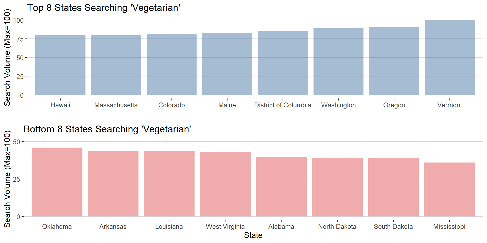

How has people’s interests in vegetarian changed over time? The data from “Google Trend” provides the monthly number of search volume in the U.S. from January 2004 to the present. It also offeres the number of search volume by state level.
# get Google search of Vegetarian using "gtrendsR"
# veg <- gtrends(keyword=c("vegetarian"), geo="US", time="all")
# trend <- veg$interest_over_time
# write.csv(trend, "data//trend.csv")
trend <- read.csv("data//trend.csv", stringsAsFactors=FALSE)
# create trend by the loess smoothing
trend$t <- c(1:nrow(trend))
smooth <- loess(trend$hits~trend$t, span=0.7)
# visualize Google search
plot_ly(trend, x=~date, y=~hits, type="scatter",
mode="lines", name="Actual Search") %>%
add_lines(x=~date, y=predict(smooth), name="Trend") %>%
layout(title="Google Search 'Vegetarian'",
legend = list(orientation="h"),
xaxis=list(title="Time", type="date"),
yaxis=list(title="Search Volume (Max=100)"),
font=list(color="black"))(This graph is interactive. You can examine dates and values by putting your cursor on it.) The Google search volume for “vegetarian” seems to be increasing recent years. In addition, people more often search “vegetarian” in November and January. This might be because vegetarians wonder what dish they should have on Thanksgiving or New Year.
# Google search by state (top 8)
# region_top <- veg$interest_by_region[1:8,]
# write.csv(region_top, "region_top.csv")
region_top <- read.csv("data//region_top.csv", stringsAsFactors=FALSE)
# make a ggplot
p1<-ggplot(region_top, aes(x=reorder(location, hits), y=hits))+
geom_bar(fill='#4E79A7', stat="identity", position="identity", alpha=0.5)+
xlab('')+ylab('Search Volume (Max=100)')+
scale_y_continuous(breaks=seq(0,100,length=5))+coord_cartesian(ylim=c(0,100))+
ggtitle("Top 8 States Searching 'Vegetarian'")+theme_hc()
# Google search by state (bottom 8)
# region_bottom <- veg$interest_by_region[44:51,]
# write.csv(region_bottom, "region_bottom.csv")
region_bottom <- read.csv("data//region_bottom.csv", stringsAsFactors=FALSE)
# make a ggplot
p2<-ggplot(region_bottom, aes(x=reorder(location, desc(hits)), y=hits))+
geom_bar(fill="#E15759", stat="identity", position="identity", alpha=0.5)+
xlab('State')+ylab('Search Volume (Max=100)')+
scale_y_continuous(breaks=seq(0,100,length=5))+coord_cartesian(ylim=c(0,50))+
ggtitle("Bottom 8 States Searching 'Vegetarian'")+theme_hc()
# visualize as one graph
gridExtra::grid.arrange(p1, p2, ncol=1)
Most of the top 8 states are located in either east or west coast, while bottom 8 states are relatively located in a middle land. According to the 2016 US presidential election, top 8 states are all “Blue” state (Democratic) and bottom 8 states are all “Red” state (Republican). This mgiht indicate that liberal people are more interested in “vegetarian” than conservative people.
Data Visualization (QMSS Spring 2020) Group F: Vegan
Please do not hesitate to give us your feedback ❤
Source files and process book.